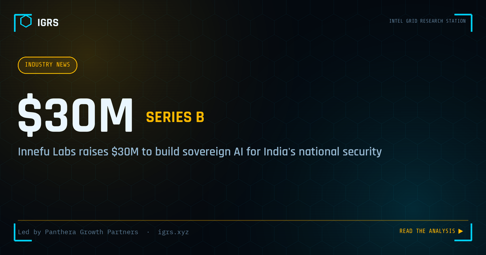

Innefu Labs Raises $30M Series B from Panthera Growth Partners to Advance Sovereign AI for National Security
One of India's better-known national-security AI companies has just landed a substantial growth round. New Delhi-based Innefu Labs announced on 5 June 2026 that it has raised USD 30 million — roughly ₹286 crore — in a Series B round led by Panthera Growth Partners. For a company that builds indigenous intelligence and investigation platforms for defence, intelligence and law-enforcement agencies, the raise is notable less for the headline figure than for what it signals: serious institutional capital is now flowing into India's sovereign deep-tech, a space long dominated by foreign vendors. Here is what the deal involves, where the money is headed, and why it matters for the wider Indian cyber and intelligence ecosystem.
The deal
According to the company's announcement, the round was completed through a combination of primary and secondary transactions drawn from Panthera Growth Partners' second fund — primary capital bringing fresh money into the business, and a secondary component giving some early backers a partial exit. The investment is explicitly framed as a step toward two goals: accelerating Innefu's expansion into international markets, building on early traction in the Middle East, and preparing the company for an eventual public listing. Panthera's second fund is backed by institutional investors across India, the European Union and the United States, and typically deploys around USD 20 million per company across India and Southeast Asia.
An earlier backer also weighed in. First Bridge Investment Managers, which invested in Innefu back in 2017, noted its satisfaction at seeing the company grow into a key technology partner for national intelligence and investigative agencies — the kind of long-horizon validation that growth-stage deep-tech rarely gets.
Where the money goes
Innefu has earmarked the proceeds for scaling and global expansion alongside deep-tech research and development anchored in what it calls an AI-first, sovereign approach. Three priorities stand out:
- Agentic AI. Further development of its proprietary agentic platform — systems designed to analyse large, multi-source datasets and support autonomous decision-making rather than just surfacing results.
- Physical AI / robotics. A dedicated new wing for robotics aimed initially at defence applications, with longer-term ambitions the company has publicly floated around areas like exoskeletons and humanoid systems.
- Sovereign AI infrastructure. Secure, domain-specialised language models built for high-trust environments — the on-premise, data-sovereign end of the LLM spectrum that government and defence buyers increasingly demand.
Co-founder and CEO Tarun Wig framed the round around the company's founding conviction that "India should never have to depend on external technologies" to secure its institutions and digital future, positioning the next phase as scaling indigenous capability rather than starting from scratch. Co-founder and CTO Abhishek Sharma echoed the sovereignty theme, tying the new capital to advancing agentic AI, moving into physical AI and robotics, and expanding globally while keeping critical data and platforms in-country.
Why it matters for India
The significance here is structural, not just financial. India's security-technology market has complex, sensitive requirements that were historically met by international defence vendors — a dependency that carries cost, data-sovereignty and supply-chain risks. A growth round of this size into a firm whose entire pitch is indigenous, on-premise, sovereign AI is a signal that the import-substitution thesis for national-security tech is becoming investable, not just aspirational. It also lands at a moment when India's own assessments rank cyber risk near the top of the national-risk table and domestic procurement of critical security technology is rising. For investigators, agencies and enterprise security teams who actually use these platforms, more capital in the domestic ecosystem should mean faster product development and more locally-built alternatives to foreign tooling.
Innefu's operational footprint
Founded in 2010 by Wig and Sharma, Innefu describes itself as a fully indigenous AI company for national and cyber security, with more than 100 installations across the Indian subcontinent, the Middle East and Southeast Asia, and a client base spanning defence and intelligence organisations, law-enforcement agencies, financial-intelligence units, BFSI and large enterprises. Its stated deployments include national-scale AI intelligence fusion centres — among them what it describes as India's first National Terrorism Data Fusion Centre and one of Southeast Asia's largest operational intelligence fusion centres — along with revenue-intelligence fusion platforms, predictive-policing systems, and indigenous OSINT and deep-web fusion platforms for law-enforcement and defence use. The company reports revenues above ₹100 crore and a growing set of ₹100 crore-plus contracts.
What to watch next
Three threads are worth tracking from here. First, the IPO path — moving toward public markets implies a step-change in financial reporting, governance and transparency, and any concrete timeline will be closely read as a bellwether for Indian deep-tech listings. Second, the robotics bet — a national-security software company standing up a physical-AI wing is an ambitious pivot, and execution there is far from guaranteed. Third, global expansion — defence-tech firms often look outward because domestic contracts can be cyclical and budget-dependent, so how Innefu scales beyond the Middle East will test the international thesis underpinning this round.
Disclosure: IGRS is operated by Manuj Kumar Pandey, who is employed at Innefu Labs. This article is based entirely on the company's public announcement and independent media coverage of the funding round, and is provided as factual reporting rather than investment advice.